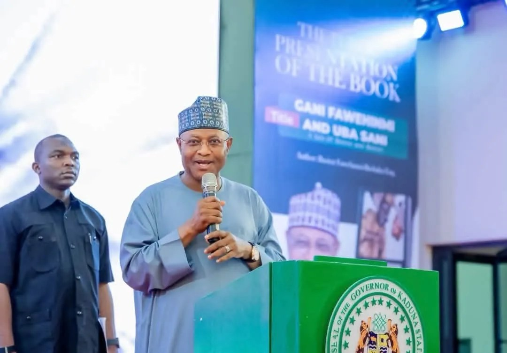

2027 Poll: Zamfara APC constitutes 900-member gubernatorial campaign council

The Zamfara State chapter of the All Progressives Congress has constituted a campaign council of more than 900 members to coordinate the party’s activities ahead of the 2027 general elections. Secretary to the State Government Abubakar Mohammad Nakwada announced the formation in a statement on Sunday. He will also serve as the council’s secretary-general.
The council was formed after consultations and recommendations by the state party chapter, and was approved by Governor Dauda Lawal and the party’s state leadership. Lawal will chair the body, with Deputy Governor Mani Mummuni and state APC chairman Kabiru Moyi B. Magaji serving as vice-chairmen.
Elder statesman Salihu Maibuhu Gummi was named director-general, while Dr Sani Ahmad Sambo will be the council’s spokesperson. The body is tasked with coordinating and driving the APC’s campaign activities in Zamfara as the party seeks victory in the forthcoming election.
The council is expected to focus on issue-based campaigning and presenting the administration’s achievements over the past three years. Its members were urged to show commitment, unity, discipline and dedication, and to comply with the Electoral Act and guidelines issued by the Independent National Electoral Commission.
Source: Premium Times